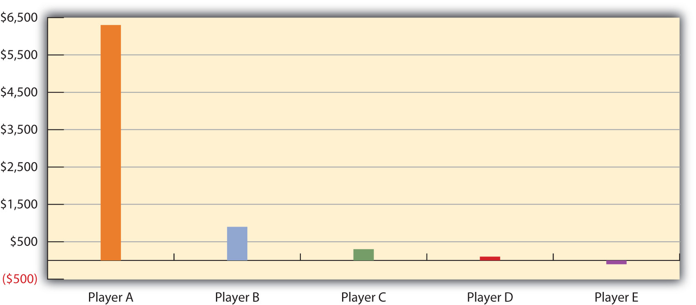
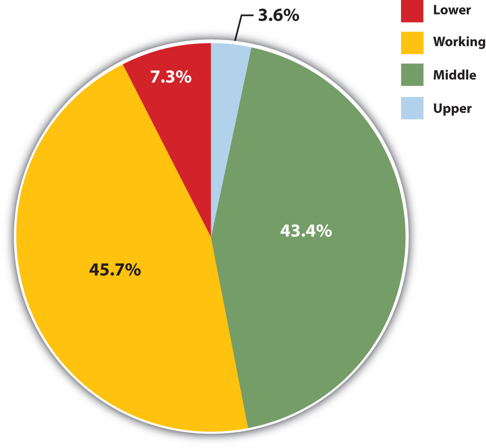
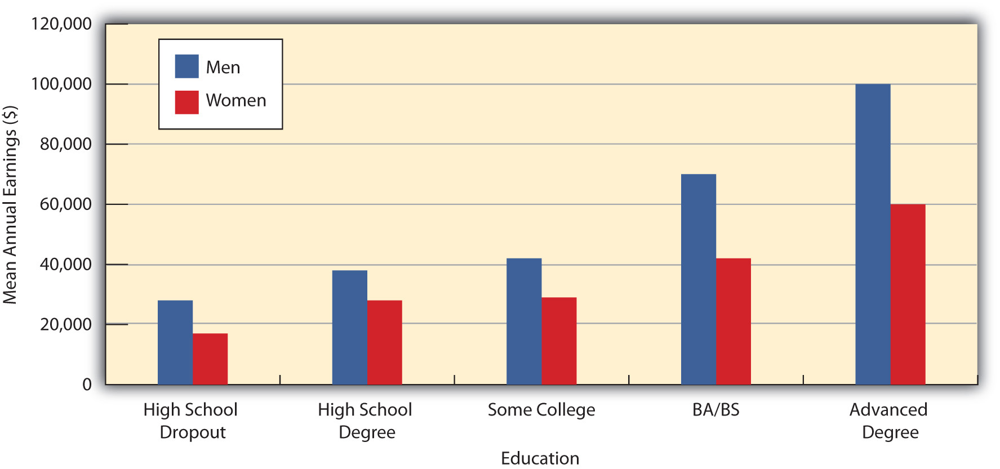
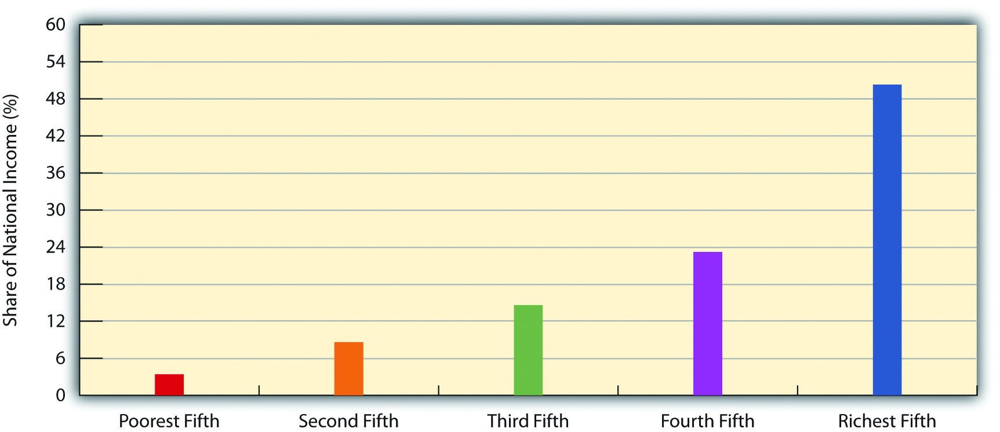
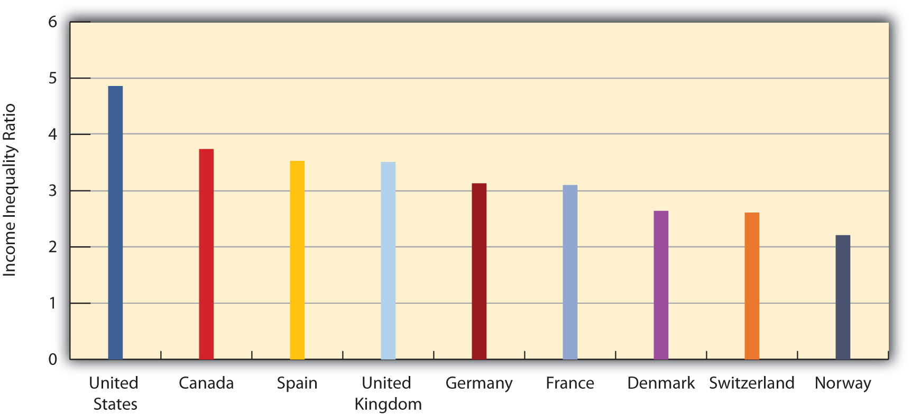
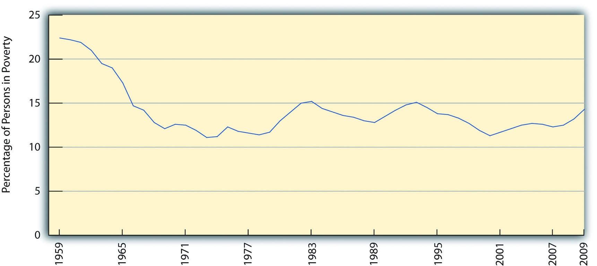
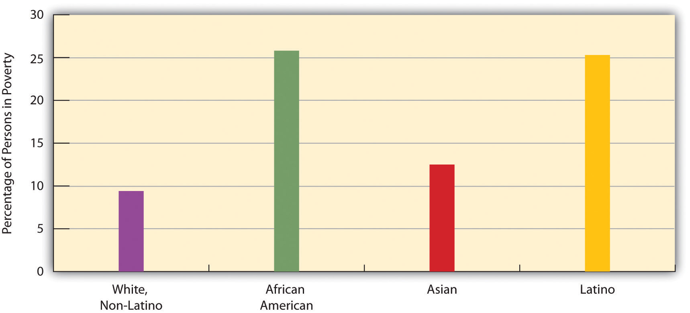

“More Wichita Kids Go Hungry,” the headline said. As the United States was in a deep recession, poverty-stricken parents in Wichita, Kansas, increasingly worried about how they would be able to feed their children. As a state official explained, “We see a lot of children who regularly wonder where their next meal is coming from. Churches that used to do food drives once every two to three months are now doing them once a month.” The number of children eating at one of Wichita’s major food pantries had climbed by one-third from a year earlier, and the number of children classified as homeless had increased by 90% from 1,000 to 1,900. A sixth-grade girl gave life to these numbers when she wrote of her own family’s situation. “My mom works very hard to support our family,” she said, “[but] some days we would eat only once a day. Then Mom got her paycheck and we were really happy but then the bills started coming and we couldn’t buy food because a house was more important. We would rather have a house to live in and we needed a car.” (Wenzl, 2009)Wenzl, R. (2009, July 5). More Wichita kids go hungry. The Wichita Eagle. Retrieved from http://www.kansas.com/news/featured/story/879754.html
This story of hunger in America’s heartland reminds us that poverty is far from unknown in the richest nation in the world, especially since the severe economic recession began in 2008. The United States has long been considered a land of opportunity, but research by sociologists and other social scientists shows again and again that people differ dramatically in their opportunity to realize the American dream.
To illustrate this, imagine that you and four other people are about to begin playing the popular board game Monopoly. Following the rules, each player begins with $1,500. You start the game, go around the board, buy properties or land on someone else’s properties, and sometimes end up in Jail or Free Parking. Like life itself, whether you eventually win or lose the game is a matter of both luck and skill.
But if Monopoly were more like real life, each player would not begin with $1,500. Instead, they would begin with very different amounts, because in real life some people are richer than others, and some are much poorer. In fact, reflecting the unequal distribution of wealth in the United States, one player, the richest, would begin with $6,352 of the $7,500 distributed to the five players combined. The next richest player would have $848. The third player would start with $285, while the next would have $52. The fifth and poorest player would actually begin $38 in debt! Figure 8.1 "Distribution of Starting Cash If Monopoly Were More Like Real Life" depicts this huge disparity in money at the beginning of the game.
Figure 8.1 Distribution of Starting Cash If Monopoly Were More Like Real Life
Source: Based on distribution of wealth data from Mishel, L., Bernstein, J., & Shierholz, H. (2009). The state of working America 2008/2009. Ithaca, NY: ILR Press [An imprint of Cornell University Press].
Now suppose you are the player starting $38 in debt. How would you feel? You can hardly afford to buy Park Place or Boardwalk. Even landing on a couple of “pay” spaces like a utility the first time you go around the board would virtually force you out of the game. If you landed in Jail, you could not afford to get out. What are your chances of winning the game? Yes, you have a chance to win, but how likely is this? The second, third, and fourth players have a better chance of winning than you do, but in the long run they certainly will not win nearly as often as the richest player, who, after all, starts out with about 85% of all the money distributed at the beginning.
Unlike most games, real life is filled with differences in wealth and other resources a society values. Sociologists refer to rankings based on these differences as social stratificationRankings of people based on wealth and other resources a society values.. Except for the simplest preindustrial societies, every society is stratified to some extent, and some societies are more stratified than others. Another way of saying this is that some societies have more economic inequality, or a greater difference between the best-off and the worst-off, than others. In modern society, stratification is usually determined by income and other forms of wealth, such as stocks and bonds, but resources such as power and prestige matter, too. No matter what determines it, a society’s stratification has significant consequences for its members’ attitudes, behavior, and, perhaps most important of all, life chancesThe degree to which people succeed in life in such areas as education, income, and health.—how well people do in such areas as education, income, and health. We will see examples of these consequences in the pages ahead and end with a discussion of some promising policies and programs for reducing inequality and poverty.
When we look around the world and through history, we see different types of stratification systems. These systems vary on their degree of vertical mobilityMovement up or down through a society’s stratification system., or the chances of rising up or falling down the stratification ladder. In some so-called closed societies, an individual has virtually no chance of moving up or down. Open societies have more vertical mobility, as some people, and perhaps many people, can move up or even down. That said, a key question is how much vertical mobility really exists in these societies. Let’s look at several systems of stratification, moving from the most closed to the most open.
The most closed system is slaveryThe ownership of people., or the ownership of people, which has been quite common in human history (Ennals, 2007).Ennals, R. (2007). From slavery to citizenship. Hoboken, NJ: John Wiley. Slavery is thought to have begun 10,000 years ago, after agricultural societies developed, as people in these societies made prisoners of war work on their farms. Many of the ancient lands of the Middle East, including Babylonia, Egypt, and Persia, also owned slaves, as did ancient China and India. Slavery especially flourished in ancient Greece and Rome, which used thousands of slaves for their trade economies. Most slaves in ancient times were prisoners of war or debtors. As trade died down during the Middle Ages, so did slavery.

Slavery is the most closed system of stratification. Although U.S. slavery, depicted here, ended with the Civil War, slavery still exists today in parts of Africa, Asia, and South America.
But once Europeans began exploring the Western Hemisphere in the 1500s, slavery regained its popularity. Portuguese and Spanish colonists who settled in Brazil and Caribbean islands made slaves of thousands of Indians already living there. After most of them died from disease and abuse, the Portuguese and Spaniards began bringing slaves from Africa. In the next century, the English, the French, and other Europeans also began bringing African slaves into the Western Hemisphere, and by the 1800s they had captured and shipped to the New World some 10–12 million Africans, almost 2 million of whom died along the way (Thornton, 1998).Thornton, J. K. (1998). Africa and Africans in the making of the Atlantic world, 1400–1800 (2nd ed.). Cambridge, England: Cambridge University Press.
The United States, of course, is all too familiar with slavery, which remains perhaps the most deplorable experience in American history and continues to have repercussions for African Americans and the rest of American society. It increasingly divided the new nation after it won its independence from Britain and helped lead to the Civil War eight decades later. The cruel treatment of slaves was captured in Harriet Beecher Stowe’s classic but controversial book Uncle Tom’s Cabin, which ignited passions on both sides of the slavery debate.
Slavery still exists in parts of Africa, Asia, and South America, with some estimates putting the number of slaves in the tens of millions. Today’s slaves include (a) men first taken as prisoners of war in ethnic conflicts; (b) girls and women captured in wartime or kidnapped from their neighborhoods and used as prostitutes or sex slaves; (c) children sold by their parents to become child laborers; and (d) workers paying off debts who are abused and even tortured and too terrified to leave (Bales, 2007; Batstone, 2007).Bales, K. (2007). Ending slavery: How we free today’s slaves. Berkeley: University of California Press; Batstone, D. (2007). Not for sale: The return of the global slave trade—and how we can fight it. New York, NY: HarperOne.
Estate systemsA system of stratification characterized by control of land that was common during feudalism. are characterized by control of land and were common in Europe and Asia during the Middle Ages and into the 1800s. In these systems, two major estates existed: the landed gentry or nobility and the peasantry or serfs. The landed gentry owned huge expanses of land on which serfs toiled. The serfs had more freedom than slaves had but typically lived in poverty and were subject to arbitrary control by the nobility (Kerbo, 2009).Kerbo, H. R. (2009). Social stratification and inequality. New York, NY: McGraw-Hill.
Estate systems thrived in Europe until the French Revolution in 1789 violently overturned the existing order and inspired people in other nations with its cries for freedom and equality. As time went on, European estate systems slowly gave way to class systems of stratification (discussed a little later). After the American colonies won their independence from Britain, the South had at least one characteristic of an estate system, the control of large plots of land by a relatively few wealthy individuals and their families, but it used slaves rather than serfs to work the land.
Much of Asia, especially China and Japan, also had estate systems. For centuries, China’s large population lived as peasants in abject conditions and frequently engaged in peasant uprisings. These escalated starting in the 1850s after the Chinese government raised taxes and charged peasants higher rents for the land on which they worked. After many more decades of political and economic strife, Communists took control of China in 1949 (DeFronzo, 2007).DeFronzo, J. (2007). Revolutions and revolutionary movements (3rd ed.). Boulder, CO: Westview Press.
In a caste systemA stratification system based on rigid placement at birth into unequal groups based on one’s parents’ status, with no chance of moving out of these groups., people are born into unequal groups based on their parents’ status and remain in these groups for the rest of their lives. For many years, the best-known caste system was in India, where, supported by Hindu beliefs emphasizing the acceptance of one’s fate in life, several major castes dictated one’s life chances from the moment of birth, especially in rural areas (Kerbo, 2009).Kerbo, H. R. (2009). Social stratification and inequality. New York, NY: McGraw-Hill. People born in the lower castes lived in abject poverty throughout their lives. Another caste, the harijan, or untouchables, was considered so low that technically it was not thought to be a caste at all. People in this caste were called the untouchables because they were considered unclean and were prohibited from coming near to people in the higher castes. Traditionally, caste membership in India almost totally determined an individual’s life, including what job you had and whom you married; for example, it was almost impossible to marry someone in another caste. After India won its independence from Britain in 1949, its new constitution granted equal rights to the untouchables. Modern communication and migration into cities further weakened the caste system, as members of different castes now had more contact with each other. Still, caste prejudice remains a problem in India and illustrates the continuing influence of its traditional system of social stratification.
A country that used to have a caste system is South Africa. In the days of apartheid, from 1950 to 1990, a small group of white Afrikaners ruled the country. Black people constituted more than three-quarters of the nation’s population and thus greatly outnumbered Afrikaners, but they had the worst jobs, could not vote, and lived in poor, segregated neighborhoods. Afrikaners bolstered their rule with the aid of the South African police, which used terror tactics to intimidate blacks (I. Berger, 2009).Berger, I. (2009). South Africa in world history. New York, NY: Oxford University Press.
Many observers believe a caste system existed in the U.S. South until the civil rights movement ended legal racial segregation.
Source: Photo courtesy of U.S. Library of Congress, http://www.loc.gov/pictures/resource/ppmsc.00199.
Many observers believe a caste system also existed in the South in the United States after Reconstruction and until the civil rights movement of the 1960s ended legal segregation. A segregated system called Jim Crow dominated the South, and even though African Americans had several rights, including the right to vote, granted to them by the 13th, 14th, and 15th Amendments to the Constitution, these rights were denied in practice. Lynchings were common for many decades, and the Southern police system bolstered white rule in the South just as the South African police system bolstered white rule in that country (Litwack, 2009).Litwack, L. F. (2009). How free is free? The long death of Jim Crow. Cambridge, MA: Harvard University Press.
Many societies, including all industrial ones, have class systemsA system of stratification containing unequal groups but with a relatively high degree of social mobility.. In this system of stratification, a person is born into a social ranking but can move up or down from it much more easily than in caste systems or slave societies. This movement in either direction is primarily the result of a person’s own effort, knowledge, and skills or lack of them. Although these qualities do not aid upward movement in caste or slave societies, they often do enable upward movement in class societies. Of the three systems of stratification discussed so far, class systems are by far the most open, meaning they have the most vertical mobility. We will look later at social class in the United States and discuss the extent of vertical mobility in American society.
Sociologist Max Weber, whose work on organizations and bureaucracies was discussed in Chapter 6 "Groups and Organizations", also had much to say about class systems of stratification. Such systems, he wrote, are based on three dimensions of stratification: class (which we will call wealth), power, and prestige. WealthIncome, stocks, bonds, real estate, and other dimensions of one’s total material possessions. is the total value of an individual or family, including income, stocks, bonds, real estate, and other assets; powerThe ability to influence others to do one’s bidding even if they don’t want to. is the ability to influence others to do your bidding, even if they do not want to; and prestigeThe status and esteem people hold in the eyes of others. refers to the status and esteem people hold in the eyes of others.
In discussing these three dimensions, Weber disagreed somewhat with Karl Marx, who said our ranking in society depends on whether we own the means of production. Marx thus felt that the primary dimension of stratification in class systems was economic. Weber readily acknowledged the importance of this economic dimension but thought power and prestige also matter. He further said that although wealth, power, and prestige usually go hand-in-hand, they do not always overlap. For example, although the head of a major corporation has a good deal of wealth, power, and prestige, we can think of many other people who are high on one dimension but not on the other two. A professional athlete who makes millions of dollars a year has little power in the political sense that Weber meant it. An organized crime leader might also be very wealthy but have little prestige outside the criminal underworld. Conversely, a scientist or professor may enjoy much prestige but not be very wealthy.
Although, as noted earlier, all societies except perhaps for the simplest ones are stratified, some large nations have done their best to eliminate stratification by developing classless societiesSocieties with no social stratification.. Marx, of course, predicted that one day the proletariat would rise up and overthrow the bourgeoisie and create a communist society, by which he meant a classless one in which everyone had roughly the same amount of wealth, power, and prestige. In Russia, China, and Cuba, revolutions inspired by Marx’s vision occurred in the 20th century. These revolutions resulted in societies not only with less economic inequality than in the United States and other class systems but also with little or no political freedom. Moreover, governing elites in these societies enjoyed much more wealth, power, and prestige than the average citizen. Overall, the communist experiments in Russia, China, and Cuba failed to achieve Marx’s vision of an egalitarian society.
Some Western European nations, such as Sweden and Denmark, have developed social democracies based on fairly socialist economies. Although a few have nominal monarchies, these nations have much political freedom and less economic inequality than the United States and other class societies. They also typically rank much higher than the United States on various social and economic indicators. Although these nations are not truly classless, they indicate it is possible, if not easy, to have a society that begins to fulfill Marx’s egalitarian vision but where political freedom still prevails (Sandbrook, Edelman, Heller, & Teichman, 2007).Sandbrook, R., Edelman, M., Heller, P., & Teichman, J. (2007). Social democracy in the global periphery: Origins, challenges, prospects. New York, NY: Cambridge University Press.
Why is stratification so common? Is it possible to have a society without stratification? Sociologists trying to answer these questions have developed two very different macro explanations of stratification, while symbolic interactionists have examined the differences that stratification produces for everyday interaction. Table 8.1 "Theory Snapshot" summarizes these three approaches.
Table 8.1 Theory Snapshot
| Theoretical perspective | Major assumptions |
|---|---|
| Functionalism | Stratification is necessary to induce people with special intelligence, knowledge, and skills to enter the most important occupations. For this reason, stratification is necessary and inevitable. |
| Conflict | Stratification results from lack of opportunity and from discrimination and prejudice against the poor, women, and people of color. It is neither necessary nor inevitable. |
| Symbolic interactionism | Stratification affects people’s beliefs, lifestyles, daily interaction, and conceptions of themselves. |
Recall from Chapter 1 "Sociology and the Sociological Perspective" that functionalist theory assumes that the various structures and processes in society exist because they serve important functions for society’s stability and continuity. In line with this view, functionalist theorists in sociology assume that stratification exists because it also serves important functions for society. This explanation was developed more than 60 years ago by Kingsley Davis and Wilbert Moore (Davis & Moore, 1945)Davis, K., & Moore, W. (1945). Some principles of stratification. American Sociological Review, 10, 242–249. in the form of several logical assumptions that imply stratification is both necessary and inevitable. When applied to American society, their assumptions would be as follows:
As this example suggests, many people might not choose to become brain surgeons unless considerable financial and other rewards awaited them. By extension, we might not have enough people filling society’s important jobs unless they know they will be similarly rewarded. If this is true, we must have stratification. This all sounds very logical, but a few years after Davis and Moore published their functionalist theory of stratification, other sociologists pointed out some serious problems in their argument (Tumin, 1953; Wrong, 1959).Tumin, M. M. (1953). Some principles of stratification: A critical analysis. American Sociological Review, 18, 387–393; Wrong, D. H. (1959). The functional theory of stratification: Some neglected considerations. American Sociological Review, 24, 772–782.
First, it is difficult to compare the importance of many types of jobs. For example, which is more important, doing brain surgery or mining coal? Although you might be tempted to answer “brain surgery,” if no coal were mined, much of our society could not function. In another example, which job is more important, attorney or professor? (Be careful how you answer this one!)
Second, the functionalist explanation implies that the most important jobs have the highest incomes and the least important jobs the lowest incomes, but many examples, including the ones just mentioned, counter this view. Coal miners make much less money than physicians, and professors, for better or worse, earn much less on the average than lawyers. A professional athlete making millions of dollars a year earns many times the income of the president of the United States, but who is more important to the nation? Elementary school teachers do a very important job in our society, but their salaries are much lower than those of sports agents, advertising executives, and many other people whose jobs are far less essential.
Third, the functionalist view also implies that people move up the economic ladder based on their abilities, skills, knowledge, and, more generally, their merit. If this is true, another implication is that if they do not move up the ladder, they lack the necessary merit. This view ignores the fact that much of our stratification stems from lack of equal opportunity, as our Monopoly example at the beginning of the chapter made clear. Because of their race, ethnicity, gender, and class standing at birth, some people have less opportunity than others to acquire the skills and training they need to fill the types of jobs addressed by the functionalist approach.
Finally, the functionalist explanation might make sense up to a point, but it does not justify the extremes of wealth and poverty found in the United States and other nations. Even if we do have to promise higher incomes to get enough people to become physicians, does that mean we also need the amount of poverty we have? Do CEOs of corporations really need to make millions of dollars per year to get enough qualified people to become CEOs? Don’t people take on a CEO job or other high-paying job at least partly because of the challenge, working conditions, and other positive aspects they offer? The functionalist view does not answer these questions adequately.
Conflict theory’s explanation of stratification draws on Karl Marx’s view of class societies and incorporates the critique of the functionalist view just discussed. Many different explanations grounded in conflict theory exist, but they all assume that stratification stems from a fundamental conflict between the needs and interests of the powerful, or “haves,” in society and those of the weak, or “have-nots” (Kerbo, 2009).Kerbo, H. R. (2009). Social stratification and inequality. New York, NY: McGraw-Hill. The former take advantage of their position at the top of society to stay at the top, even if it means oppressing those at the bottom. At a minimum, they can heavily influence the law, the media, and other institutions in a way that maintains society’s class structure.
In explaining stratification, conflict theory emphasizes ideologyA set of beliefs that supports the status quo., or a set of ideas that justifies the status quo. This emphasis goes back to the work of Marx, who said the ruling class shapes and even controls the ruling ideas of a society. It tries to shape these ideas so that they justify the existing order and decrease the chances that the poor will challenge it. The key goal of the ruling class here is to prevent the poor from achieving class consciousnessAn awareness of one’s social class membership, the structural reasons for it, and the needs arising from such membership., or an awareness of their oppression and the true reasons for it (Marx & Engels, 1947).Marx, K., & Engels, F. (1947). The German ideology. New York, NY: International Publishers. If the poor instead do not recognize their interests as a class that does not control the means of production, they suffer from false consciousnessA failure to possess class consciousness..
As an example, Marx called religion the “opiate of the masses.” By this he meant that religious beliefs influence the poor to feel that their fate in life is God’s will or a test of their belief in God. If they hold such beliefs, they will neither blame their poverty on the rich nor rebel against them. Religious beliefs help create false consciousness.
Ideological beliefs bolster every system of stratification and domination. In slave societies, the dominant ideology, and one that at least some slaves accepted, was that slaves are inferior to their masters and deserve no better fate in life. When U.S. slavery existed in the South, it was commonly thought that blacks were biologically inferior and suited only to be slaves. Caste societies, as we noted earlier, have similar beliefs that justify the existence and impact of the caste system. Hitler’s “final solution” likewise rested on the belief that Jews and other groups he targeted were biologically inferior and deserving of extermination.

Because he was born in a log cabin and later became president, Abraham Lincoln’s life epitomizes the American Dream, the belief that people born into poverty can become successful through hard work. The popularity of this belief leads many Americans to blame poor people for their poverty.
Source: Photo courtesy of U.S. Library of Congress, http://www.loc.gov/pictures/resource/cph.3a53289.
Ideological beliefs in class societies are more subtle and complex but nonetheless influential. One of the most important beliefs in the United States is the American Dream, epitomized by the story of Abraham Lincoln. According to this belief, people born into poverty can lift themselves up by the bootstraps and become successful if they work hard enough. By implication, if people remain poor, they are not trying hard enough or have other personal deficiencies keeping them in poverty. This ideology prompts many Americans to take a blaming-the-victim approach (see Chapter 1 "Sociology and the Sociological Perspective") by blaming poverty on laziness and other problems in the poor rather than on discrimination and the lack of opportunity in society. To the extent that people accept such ideological beliefs, they are less likely to criticize the existing system of stratification. Marx did not foresee the extent to which these beliefs would impede the development of class consciousness in the United States.
International data underline this American ideology. We saw in Chapter 3 "Culture" that about 60% of Americans attribute poverty to laziness and lack of willpower, compared to less than half that in Mexico, Russia, Spain, and Sweden. Belief in the American Dream evidently helps lead to a blaming-the-victim ideology that blames the poor for their own fate.
Conflict theory assumes that class position influences our perceptions of social and political life, even if not to the degree envisioned by Marx. Some national survey data support this assumption. A General Social Survey question asks whether it is the government’s responsibility to “reduce income differences between the rich and poor.” As Figure 8.2 "Annual Family Income and Belief That Government “Should Reduce Income Differences Between the Rich and Poor”" shows, low-income people are much more likely than high-income people to think the government has this responsibility.
Figure 8.2 Annual Family Income and Belief That Government “Should Reduce Income Differences Between the Rich and Poor”

Source: Data from General Social Survey, 2006.
Consistent with its micro orientation, symbolic interactionism tries to understand stratification by looking at people’s interaction and understandings in their daily lives. Unlike the functionalist and conflict views, it does not try to explain why we have stratification in the first place. Rather, it examines the differences that stratification makes for people’s lifestyles and their interaction with other people.
One of the most insightful analyses of stratification that fits into a symbolic interactionist framework was Thorstein Veblin’s (1899/1953)Veblen, T. (1953). The theory of the leisure class: An economic study of institutions. New York, NY: New American Library. (Original work published 1899) famous discussion of conspicuous consumption, or the acquisition and display by the wealthy of lavish products that show off their wealth. The very rich do not need mansions or other very opulent homes, and neither do they need a motor vehicle costing upward of $100,000 or more or jewelry costing thousands and thousands of dollars. Yet they purchase these products to show off their wealth and to feel better about themselves. The lifestyles of the rich are featured in classic novels by writers such as F. Scott Fitzgerald and in classic films such as The Philadelphia Story, starring the formidable trio of Katharine Hepburn, Cary Grant, and James Stewart. Although one message of many of these cultural works is that money does not always bring happiness, it remains true, as Fitzgerald once wrote, “Let me tell you about the very rich. They are different from you and me.”
Examples of the symbolic interactionist framework are also seen in the many literary works and films that portray the difficulties that the rich and poor have in interacting on the relatively few occasions when they do interact. For example, in the film Pretty Woman, Richard Gere plays a rich businessman who hires a prostitute, played by Julia Roberts, to accompany him to swank parties and other affairs. Roberts has to buy a new wardrobe and learn how to dine and behave in rich social settings, and much of the film’s humor and poignancy come from her awkwardness in learning the lifestyle of the rich.
If there are many dramatic and humorous accounts of the “lifestyles of the rich and famous,” there are also many sociological and other accounts of lives of the poor. Poverty is discussed later in this chapter, but for now it is sufficient to say that the poor often lead lives of quiet desperation and must find many ways of coping with the fact of being poor. Studies of the poor, too, reflect the symbolic interactionist perspective.
There is a surprising amount of disagreement among sociologists on the number of social classes in the United States and even on how to measure social class membership. We first look at the measurement issue and then discuss the number and types of classes sociologists have delineated.
We can measure social class either objectively or subjectively. If we choose the objective method, we classify people according to one or more criteria, such as their occupation, education, and/or income. The researcher is the one who decides which social class people are in based on where they stand in regard to these variables. If we choose the subjective method, we ask people what class they think they are in. For example, the General Social Survey asks, “If you were asked to use one of four names for your social class, which would you say you belong in: the lower class, the working class, the middle class, or the upper class?” Figure 8.3 "Subjective Social Class Membership" depicts responses to this question. The trouble with such a subjective measure is that some people say they are in a social class that differs from what objective criteria might indicate they are in. This problem leads most sociologists to favor objective measures of social class when they study stratification in American society.
Figure 8.3 Subjective Social Class Membership
Source: Data from General Social Survey, 2008.
Yet even here there is disagreement between functionalist theorists and conflict theorists on which objective measures to use. Functionalist sociologists rely on measures of socioeconomic status (SES)A measure based on occupation, education, and income favored by functionalist sociologists as an indicator of social class position., such as education, income, and occupation, to determine someone’s social class. Sometimes one of these three variables is used by itself to measure social class, and sometimes two or all three of the variables are combined (in ways that need not concern us) to measure social class. When occupation is used, sociologists often rely on standard measures of occupational prestige. Since the late 1940s, national surveys have asked Americans to rate the prestige of dozens of occupations, and their ratings are averaged together to yield prestige scores for the occupations (Hodge, Siegel, & Rossi, 1964).Hodge, R. W., Siegel, P., & Rossi, P. (1964). Occupational prestige in the United States, 1925–63. American Journal of Sociology, 70, 286–302. Over the years these scores have been relatively stable. Here are some average prestige scores for various occupations: physician, 86; college professor, 74; elementary school teacher, 64; letter carrier, 47; garbage collector, 28; and janitor, 22.
Despite SES’s usefulness, conflict sociologists prefer different, though still objective, measures of social class that take into account ownership of the means of production and other dynamics of the workplace. These measures are closer to what Marx meant by the concept of class throughout his work, and they take into account the many types of occupations and workplace structures that he could not have envisioned when he was writing during the 19th century.
For example, corporations have many upper-level managers who do not own the means of production but still determine the activities of workers under them. They thus do not fit neatly into either of Marx’s two major classes, the bourgeoisie or the proletariat. Recognizing these problems, conflict sociologists delineate social class on the basis of several factors, including the ownership of the means of production, the degree of autonomy workers enjoy in their jobs, and whether they supervise other workers or are supervised themselves (Wright, 2000).Wright, E. O. (2000). Class counts: Comparative studies in class analysis. New York, NY: Cambridge University Press.
As should be evident, it is not easy to determine how many social classes exist in the United States. Over the decades, sociologists have outlined as many as six or seven social classes based on such things as, once again, education, occupation, and income, but also on lifestyle, the schools people’s children attend, a family’s reputation in the community, how “old” or “new” people’s wealth is, and so forth (Coleman & Rainwater, 1978; Warner & Lunt, 1941).Coleman, R. P., & Rainwater, L. (1978). Social standing in America. New York, NY: Basic Books; Warner, W. L., & Lunt, P. S. (1941). The social life of a modern community. New Haven, CT: Yale University Press. For the sake of clarity, we will limit ourselves to the four social classes included in Figure 8.3 "Subjective Social Class Membership": the upper class, the middle class, the working class, and the lower class. Although subcategories exist within some of these broad categories, they still capture the most important differences in the American class structure (Gilbert, 2011).Gilbert, D. (2011). The American class structure in an age of growing inequality (8th ed.). Thousand Oaks, CA: Pine Forge Press. The annual income categories listed for each class are admittedly somewhat arbitrary but are based on the percentage of households above or below a specific income level.
Depending on how it is defined, the upper class consists of about 4% of the U.S. population and includes households with annual incomes (2009 data) of more than $200,000 (DeNavas-Walt, Proctor, & Smith, 2010).DeNavas-Walt, C., Proctor, B. D., & Smith, J. C. (2010). Income, poverty, and health insurance coverage in the United States: 2009 (Current Population Report P60-238). Washington, DC: U.S. Census Bureau. Some scholars would raise the ante further by limiting the upper class to households with incomes of at least $500,000 or so, which in turn reduces this class to about 1% of the population, with an average wealth (income, stocks and bonds, and real estate) of several million dollars. However it is defined, the upper class has much wealth, power, and influence (Kerbo, 2009).Kerbo, H. R. (2009). Social stratification and inequality. New York, NY: McGraw-Hill.
Members of the upper-upper class have “old” money that has been in their families for generations; some boast of their ancestors coming over on the Mayflower. They belong to exclusive clubs and live in exclusive neighborhoods; have their names in the Social Register; send their children to expensive private schools; serve on the boards of museums, corporations, and major charities; and exert much influence on the political process and other areas of life from behind the scenes. Members of the lower-upper class have “new” money acquired through hard work, lucky investments, and/or athletic prowess. In many ways their lives are similar to those of their old-money counterparts, but they do not enjoy the prestige that old money brings. Bill Gates, the founder of Microsoft and the richest person in the United States in 2009, would be considered a member of the lower-upper class because his money is too “new.” Because he does not have a long-standing pedigree, upper-upper class members might even be tempted to disparage his immense wealth, at least in private.
Many of us like to think of ourselves in the middle class, as Figure 8.3 "Subjective Social Class Membership" showed, and many of us are. The middle class includes the 46% of all households whose annual incomes range from $50,000 to $199,999. As this very broad range suggests, the middle class includes people with many different levels of education and income and many different types of jobs. It is thus helpful to distinguish the upper-middle class from the lower-middle class on the upper and lower ends of this income bracket, respectively. The upper-middle class has household incomes from about $150,000 to $199,000, amounting to about 4.4% of all households. People in the upper-middle class typically have college and, very often, graduate or professional degrees; live in the suburbs or in fairly expensive urban areas; and are bankers, lawyers, engineers, corporate managers, and financial advisers, among other occupations.
The lower-middle class has household incomes from about $50,000 to $74,999, amounting to about 18% of all families. People in this income bracket typically work in white-collar jobs as nurses, teachers, and the like. Many have college degrees, usually from the less prestigious colleges, but many also have 2-year degrees or only a high school degree. They live somewhat comfortable lives but can hardly afford to go on expensive vacations or buy expensive cars and can send their children to expensive colleges only if they receive significant financial aid.
Working-class households have annual incomes between about $25,000 and $49,999 and constitute about 25% of all U.S. households. They generally work in blue-collar jobs such as factory work, construction, restaurant serving, and less skilled clerical positions. People in the working class typically do not have 4-year college degrees, and some do not have high school degrees. Although most are not living in official poverty, their financial situation is very uncomfortable. A single large medical bill or expensive car repair would be almost impossible to pay without going into considerable debt. Working-class families are far less likely than their wealthier counterparts to own their own homes or to send their children to college. Many of them live at risk for unemployment as their companies downsize by laying off workers even in good times, and hundreds of thousands began to be laid off when the U.S. recession began in 2008.
Although lower class is a common term, many observers prefer a less negative-sounding term like the poor, which is the term used here. The poor have household incomes under $25,000 and constitute about 25% of all U.S. households. Many of the poor lack high school degrees, and many are unemployed or employed only part time in semiskilled or unskilled jobs. When they do work, they work as janitors, house cleaners, migrant laborers, and shoe shiners. They tend to rent apartments rather than own their own homes, lack medical insurance, and have inadequate diets. We will discuss the poor further when we focus later in this chapter on inequality and poverty in the United States.
Regardless of how we measure and define social class, what are our chances of moving up or down within the American class structure? As we saw earlier, the degree of vertical social mobility is a key distinguishing feature of systems of stratification. Class systems such as in the United States are thought to be open, meaning that social mobility is relatively high. It is important, then, to determine how much social mobility exists in the United States.
Here we need to distinguish between two types of vertical social mobility. Intergenerational mobilityVertical mobility from one generation to the next within the same family. refers to mobility from one generation to the next within the same family. If children from poor parents end up in high-paying jobs, the children have experienced upward intergenerational mobility. Conversely, if children of college professors end up hauling trash for a living, these children have experienced downward intergenerational mobility. Intragenerational mobilityVertical mobility within a person’s own lifetime. refers to mobility within a person’s own lifetime. If you start out as an administrative assistant in a large corporation and end up as an upper-level manager, you have experienced upward intragenerational mobility. But if you start out from business school as an upper-level manager and get laid off 10 years later because of corporate downsizing, you have experienced downward intragenerational mobility.
Sociologists have conducted a good deal of research on vertical mobility, much of it involving the movement of males up or down the occupational prestige ladder compared to their fathers, with the earliest studies beginning in the 1960s (Blau & Duncan, 1967; Featherman & Hauser, 1978).Blau, P. M., & Duncan, O. D. (1967). The American occupational structure. New York, NY: Wiley; Featherman, D. L., & Hauser, R. M. (1978). Opportunity and change. New York, NY: Academic Press. For better or worse, the focus on males occurred because the initial research occurred when many women were still homemakers and also because women back then were excluded from many studies in the social and biological sciences. The early research on males found that about half of sons end up in higher-prestige jobs than their fathers had but that the difference between the sons’ jobs and their fathers’ was relatively small. For example, a child of a janitor may end up running a hardware store but is very unlikely to end up as a corporate executive. To reach that lofty position, it helps greatly to have parents in jobs much more prestigious than a janitor’s. Contemporary research also finds much less mobility among African Americans and Latinos than among non-Latino whites with the same education and family backgrounds, suggesting an important negative impact of racial and ethnic discrimination (see Chapter 7 "Deviance, Crime, and Social Control").
A key vehicle for upward mobility is formal education. Regardless of the socioeconomic status of our parents, we are much more likely to end up in a high-paying job if we attain a college degree or, increasingly, a graduate or professional degree. Figure 8.4 "Education and Median Earnings of Year-Round, Full-Time Workers, 2007" vividly shows the difference that education makes for Americans’ median annual incomes. Notice, however, that for a given level of education, men’s incomes are greater than women’s. Figure 8.4 "Education and Median Earnings of Year-Round, Full-Time Workers, 2007" thus suggests that the payoff of education is higher for men than for women, and many studies support this conclusion (Green & Ferber, 2008).Green, C. A., & Ferber, M. A. (2008). The long-term impact of labor market interruptions: How crucial is timing? Review of Social Economy, 66, 351–379. The reasons for this gender difference are complex and will be discussed further in Chapter 11 "Gender and Gender Inequality". To the extent vertical social mobility exists in the United States, then, it is higher for men than for women and higher for whites than for people of color.
Figure 8.4 Education and Median Earnings of Year-Round, Full-Time Workers, 2007
Source: Data from U.S. Census Bureau. (2010). Statistical abstract of the United States: 2010. Washington, DC: U.S. Government Printing Office. Retrieved from http://www.census.gov/compendia/statab.
Certainly the United States has upward social mobility, even when we take into account gender and racial discrimination. Whether we conclude the United States has a lot of vertical mobility or just a little is the key question, and the answer to this question depends on how the data are interpreted. People can and do move up the socioeconomic ladder, but their movement is fairly limited. Hardly anyone starts at the bottom of the ladder and ends up at the top. As we see later in this chapter, recent trends in the U.S. economy have made it more difficult to move up the ladder and have even worsened the status of some people.
One way of understanding the issue of U.S. mobility is to see how much parents’ education affects the education their children attain. Figure 8.5 "Parents’ Education and Percentage of Respondents Who Have a College Degree" compares how General Social Survey respondents with parents of different educational backgrounds fare in attaining a college (bachelor’s) degree. For the sake of clarity, the figure includes only those respondents whose parents had the same level of education as each other: they either both dropped out of high school, both were high school graduates, or both were college graduates.
Figure 8.5 Parents’ Education and Percentage of Respondents Who Have a College Degree

Source: Data from General Social Survey, 2008.
As Figure 8.5 "Parents’ Education and Percentage of Respondents Who Have a College Degree" indicates, we are much more likely to get a college degree if our parents had college degrees themselves. The two bars for respondents whose parents were high school graduates or dropouts, respectively, do represent upward mobility, because the respondents are graduating from college even though their parents did not. But the three bars taken together also show that our chances of going to college depend heavily on our parents’ education (and presumably their income and other aspects of our family backgrounds). The American Dream does exist, but it is much more likely to remain only a dream unless we come from advantaged backgrounds. In fact, there is less vertical mobility in the United States than in other Western democracies. As a recent analysis summarized the evidence, “There is considerably more mobility in most of the other developed economies of Europe and Scandinavia than in the United States” (Mishel, Bernstein, & Shierholz, 2009, p. 108).Mishel, L., Bernstein, J., & Shierholz, H. (2009). The state of working America 2008/2009. Ithaca, NY: ILR Press [An imprint of Cornell University Press].
In his classic book The Other America, Michael Harrington (1962)Harrington, M. (1962). The other America: Poverty in the United States. New York, NY: Macmillan. brought the reality of poverty home to many Americans. In chapter after chapter, he discussed the troubled lives of the poor in rural Appalachia, in our urban centers, and in other areas of the country, and he indicted the country for not helping the poor. His book helped kindle interest in the White House and Congress in aiding the poor and deeply affected its thousands of readers. Almost five decades later, we know much more about poverty than we used to. Despite initial gains in fighting poverty in the 1960s (Schwartz, 1984),Schwartz, J. E. (1984, June 18). The war we won: How the great society defeated poverty. The New Republic, 18–19. poverty is still with us and has worsened since the early 2000s, especially since the onset of the serious economic recession that began in 2008. What do we know about the extent of poverty, the reasons for it, and its consequences?
Let’s start by discussing economic inequalityThe extent of the economic difference between the rich and the poor in a society., which refers to the extent of the economic difference between the rich and the poor. Because most societies are stratified, there will always be some people who are richer or poorer than others, but the key question is how much richer or poorer they are. When the gap between them is large, we say that much economic inequality exists; when the gap between them is small, we say that relatively little economic inequality exists.
Considered in this light, the United States has a very large degree of economic inequality. A common way to examine inequality is to rank the nation’s families by income from lowest to highest and then to divide this distribution into fifths. Thus, we have the poorest fifth of the nation’s families (or the 20% of families with the lowest family incomes), a second fifth with somewhat higher incomes, and so on until we reach the richest fifth of families, or the 20% with the highest incomes. We then can see what percentage each fifth has of the nation’s entire income. Figure 8.6 "Share of National Income Going to Income Fifths, 2009" shows such a calculation for the United States. The poorest fifth enjoys only 3.4% of the nation’s income, while the richest fifth enjoys 50.3%. Another way of saying this is that the richest 20% of the population have as much income as the remaining 80% of the population.
Figure 8.6 Share of National Income Going to Income Fifths, 2009
Source: Data from DeNavas-Walt, C., Proctor, B. D., & Smith, J. C. (2010). Income, poverty, and health insurance coverage in the United States: 2009 (Current Population Report P60-238). Washington, DC: U.S. Census Bureau.
This degree of inequality is the largest in the industrialized world. Figure 8.7 "Income Inequality Around the World" compares the inequality among several industrialized nations by dividing the median income of households in the 90th percentile (meaning they have more income than 90% of all households) by the median income of households in the 10th percentile (meaning they have more income than only 10% of all households); the higher the resulting ratio, the greater a nation’s inequality. The ratio for the United States, 4.86, far exceeds that for any other nation.
Figure 8.7 Income Inequality Around the World
Ratio of median income of richest 10% in each nation to that of poorest 10%.
Source: Data from Mishel, L., Bernstein, J., & Shierholz, H. (2009). The state of working America 2008/2009. Ithaca, NY: ILR Press [An imprint of Cornell University Press].
Economic inequality in the United States has increased during the last two decades. The loss of manufacturing jobs and changes in taxation and income distribution policies since the early 1980s have favored the rich and hurt the economic standing of the middle class and the poor (Barlett & Steele, 2002; Wilson, 2009).Barlett, D. L., & Steele, J. B. (2002). The great American tax dodge: How spiraling fraud and avoidance are killing fairness, destroying the income tax, and costing you. Berkeley: University of California Press; Wilson, W. J. (2009). The economic plight of inner-city black males. In E. Anderson (Ed.), Against the wall: Poor, young, black, and male (pp. 55–70). Philadelphia: University of Pennsylvania Press. After adjusting for inflation, the post-tax income of the nation’s wealthiest families grew by a much greater amount than that for the poorest families from 1979 to 2005. It grew by only 6% for the poorest fifth but by 80% for the wealthiest fifth, and it also grew by a whopping 228% for families in the top 1% of the nation’s families (Mishel, Bernstein, & Shierholz, 2009).Mishel, L., Bernstein, J., & Shierholz, H. (2009). The state of working America 2008/2009. Ithaca, NY: ILR Press [An imprint of Cornell University Press]. As the saying goes, the rich get richer. To recall our earlier discussion, to be upwardly mobile, it helps to be well-off to begin with.
When U.S. officials became concerned about poverty during the 1960s, they quickly realized they needed to find out how much poverty we had. To do so, a measure of official poverty, or a poverty lineThe government’s measure of official poverty, based on the cost of a minimal diet for a family multiplied by three., was needed. This line was first calculated in 1963 by multiplying the cost of a very minimal diet by three, as a 1955 government study had determined that the typical American family spent one-third of its income on food. Thus a family whose income is lower than three times the cost of a very minimal diet is considered officially poor.
This way of calculating the poverty line has not changed since 1963, even though many other things, such as energy, child care, and health care, now occupy a greater percentage of the typical family’s budget than was true in 1963. As a national measure, the poverty line also fails to take into account regional differences in the cost of living. For all of these reasons, many experts think the official measurement of poverty is highly suspect. As a recent report observed, “Most poverty analysts strongly believe that the official poverty statistics are inadequate to the task of determining who is poor in America” (Mishel, Bernstein, & Shierholz, 2009, p. 298).Mishel, L., Bernstein, J., & Shierholz, H. (2009). The state of working America 2008/2009. Ithaca, NY: ILR Press [An imprint of Cornell University Press].
The poverty line is adjusted annually for inflation and takes into account the number of people in a family: the larger the family size, the higher the poverty line. In 2009, the poverty line for a nonfarming family of four (two adults, two children) was $21,756. A four-person family earning even one more dollar than $21,756 in 2009 was not officially poor, even though its “extra” income hardly lifted it out of dire economic straits. Policy experts have calculated a no-frills budget that enables a family to meet its basic needs in food, clothing, shelter, and so forth; this budget is about twice the poverty line. Families with incomes between the poverty line and twice the poverty line are barely making ends meet, but they are not considered officially poor. When we talk here about the poverty level, keep in mind that we are talking only about official poverty and that there are many families and individuals living in near-poverty who have trouble meeting their basic needs, especially when they face unusually high medical or motor vehicle expenses or the like. For this reason, some analyses use “twice-poverty” data (i.e., family incomes below twice the poverty line) to provide a more accurate understanding of how many Americans face serious financial difficulties.
With this caveat in mind, how many Americans are poor, and who are they? The U.S. Census Bureau gives us some answers. In 2009, 14.3% of the U.S. population, or almost 44 million Americans, lived in (official) poverty (DeNavas-Walt, Proctor, & Smith, 2010).DeNavas-Walt, C., Proctor, B. D., & Smith, J. C. (2010). Income, poverty, and health insurance coverage in the United States: 2009 (Current Population Report P60-238). Washington, DC: U.S. Census Bureau. This percentage represented a decline from the early 1990s but was higher than the rate in the late 1960s (see Figure 8.8 "U.S. Poverty, 1959–2009"). If we were winning the war on poverty in the 1960s, since then poverty has fought us to a standstill.
Figure 8.8 U.S. Poverty, 1959–2009
Source: Data from U.S. Census Bureau. (2010). Historical poverty tables: People. Retrieved from http://www.census.gov/hhes/www/poverty/data/historical/people.html.
Another way of understanding the extent of poverty is to consider episodic povertyAs defined by the Census Bureau, being poor for at least 2 consecutive months in some time period., defined by the Census Bureau as being poor for at least 2 consecutive months in some time period. From 2004 to 2007, the last years for which data are available, almost one-third of the U.S. public, equal to about 95 million people, were poor for at least 2 consecutive months, although only 2.2% were poor for all 3 years (DeNavas-Walt, Proctor, & Smith, 2010).DeNavas-Walt, C., Proctor, B. D., & Smith, J. C. (2010). Income, poverty, and health insurance coverage in the United States: 2009 (Current Population Report P60-238). Washington, DC: U.S. Census Bureau. As these figures indicate, people go into and out of poverty, but even those who go out of it do not usually move very far from it.
Poverty and Poverty Policy in Other Western Democracies
To compare international poverty rates, scholars commonly use a measure of the percentage of households in a nation that receive less than half of the nation’s median household income after taxes and cash transfers from the government. In 2000, the latest date for which data are available, 17% of U.S. households lived in poverty as defined by this measure (Mishel, Bernstein, & Shierholz, 2009).Mishel, L., Bernstein, J., & Shierholz, H. (2009). The state of working America 2008/2009. Ithaca, NY: ILR Press [An imprint of Cornell University Press]. By comparison, selected other Western democracies had the following rates (Mishel, Bernstein, & Shierholz, 2009, p. 384):Mishel, L., Bernstein, J., & Shierholz, H. (2009). The state of working America 2008/2009. Ithaca, NY: ILR Press [An imprint of Cornell University Press].
| Canada | 11.4% |
| Denmark | 9.2% |
| France | 8.0% |
| Germany | 8.3% |
| Norway | 6.4% |
| Spain | 14.3% |
| Sweden | 6.5% |
| United Kingdom | 12.4% |
The average poverty rate of Western democracies excluding the United States is 9.8%. The U.S. rate is thus 1.73 times greater than this average.
Why is there so much more poverty in the United States than in its Western counterparts? Several differences between the United States and the other nations stand out. First, other Western nations have higher minimum wages and stronger unions than the United States has, and these lead to incomes that help push people above poverty. Second, the other nations spend a much greater proportion of their gross domestic product on social expenditures (income support and social services such as child care subsidies and housing allowances) than does the United States. As a recent analysis concluded,
Other peer countries are much more likely than the United States to step in where markets have failed to live their most disadvantaged citizens out of poverty. This suggests that the relatively low expenditures on social welfare are at least partially implicated in the high poverty rates in the United States. (Mishel, Bernstein, & Shierholz, 2009, p. 387)Mishel, L., Bernstein, J., & Shierholz, H. (2009). The state of working America 2008/2009. Ithaca, NY: ILR Press [An imprint of Cornell University Press].
In short, the United States has so much more poverty than other democracies in part because it spends so much less than they do on helping the poor. The United States certainly has the wealth to follow their example, but it has chosen not to do so, and a high poverty rate is the unfortunate result.
Who are the poor? Contrary to popular images, the most typical poor person in the United States is white: approximately 44% of poor people are white (non-Latino), 29% are Latino, 23% are black, and 4% are Asian (see Figure 8.9 "Racial and Ethnic Composition of the Poor, 2009 (Percentage of Poor Persons in Each Group)"). At the same time, race and ethnicity affect the chances of being poor: while only 9.4% of non-Latino whites are poor, 25.8% of African Americans, 12.5% of Asians, and 25.3% of Latinos (who may be of any race) are poor (see Figure 8.10 "Race, Ethnicity, and Poverty, 2009 (Percentage of Each Group That Is Poor)"). Thus African Americans and Latinos are almost three times as likely as non-Latino whites to be poor. (Because there are so many non-Latino whites in the United States, the plurality of poor people are non-Latino white, even if the percentage of whites who are poor is relatively low.) Chapter 10 "Race and Ethnicity" further discusses the link between poverty and race and ethnicity.
Figure 8.9 Racial and Ethnic Composition of the Poor, 2009 (Percentage of Poor Persons in Each Group)

Source: Data from DeNavas-Walt, C., Proctor, B. D., & Smith, J. C. (2010). Income, poverty, and health insurance coverage in the United States: 2009 (Current Population Report P60-238). Washington, DC: U.S. Census Bureau.
Figure 8.10 Race, Ethnicity, and Poverty, 2009 (Percentage of Each Group That Is Poor)
Source: Data from U.S Census Bureau Current Population Survey. (2008). POV01: Age and sex of all people, family members and unrelated individuals iterated by income-to-poverty ratio and race. Retrieved from http://www.census.gov/hhes/www/macro/032008/pov/new01_100.htm.
Turning to age, almost 21% of children under age 18 are poor (amounting to more than 15 million children), including 35.7% of African American children and 33.1% of Latino children (DeNavas-Walt, Proctor, & Smith, 2010).DeNavas-Walt, C., Proctor, B. D., & Smith, J. C. (2010). Income, poverty, and health insurance coverage in the United States: 2009 (Current Population Report P60-238). Washington, DC: U.S. Census Bureau. The poverty rate for U.S. children is the highest in the Western world and 1.5 to 9 times greater than the corresponding rates in Canada and Western Europe (Mishel, Bernstein, & Shierholz, 2009).Mishel, L., Bernstein, J., & Shierholz, H. (2009). The state of working America 2008/2009. Ithaca, NY: ILR Press [An imprint of Cornell University Press]. At the other end of the age distribution, 8.9% of people aged 65 or older are poor (amounting to about 3.4 million seniors). Turning around these U.S. figures, about 36% of all poor people in the United States are children, and about 8% of the poor are 65 or older. Thus some 44% of Americans living in poverty are children or the elderly.
The type of family structure also makes a difference: whereas only 8.5% of children living with married parents live in poverty, 43% of those living with only their mother live in poverty (2007 data). This latter figure is about 32% for Asian children and for non-Latino white children and rises to slightly more than 50% for African American children and Latino children (Moore, Redd, Burkhauser, Mbawa, & Collins, 2009).Moore, K. A., Redd, Z., Burkhauser, M., Mbawa, K., & Collins, A. (2009). Children in poverty: Trends, consequences, and policy options. Washington, DC: Child Trends. Retrieved from http://www.childtrends.org/Files//Child_Trends-2009_04_07_RB_ChildreninPoverty.pdf As these latter numbers indicate, families headed by a single woman are much more likely to be poor. Poverty thus has a female face.
Explanations of poverty focus on problems either within the poor themselves or in the society in which they live (Iceland, 2006).Iceland, J. (2006). Poverty in America: A handbook. Berkeley: University of California Press. The first type of explanation follows logically from the functional theory of stratification and may be considered an “individual” explanation. The second type of explanation follows from conflict theory and is a structural explanation that focuses on problems in American society that produce poverty. As the “Sociology Making a Difference” box discusses, the explanation of poverty people favor affects how sympathetic they are to the poor.
According to the individual explanation, the poor have personal problems and deficiencies that are responsible for their poverty. In the past, the poor were thought to be biologically inferior, a view that has not entirely faded, but today the much more common belief is that they lack the ambition and motivation to work hard and to achieve. According to the World Values Survey, 60% of Americans believe that people are poor “because they are lazy and lack will power.” This percentage reflects the tendency of Americans to favor individual explanations of poverty (Davidson, 2009).Davidson, T. C. (2009). Attributions for poverty among college students: The impact of service-learning and religiosity. College Student Journal, 43, 136–144.
A more sophisticated version of this type of explanation is called the culture of poverty theory (Banfield, 1974; O. Lewis, 1966).Banfield, E. C. (1974). The unheavenly city revisited. Boston, MA: Little, Brown; Lewis, O. (1966). The culture of poverty. Scientific American, 113, 19–25. According to this theory, the poor generally have beliefs and values that differ from those of the nonpoor and that doom them to continued poverty. For example, they are said to be impulsive and to live for the present rather than the future. Critics say this view exaggerates the degree to which the poor and nonpoor do in fact hold different values and ignores discrimination and other problems in American society (Iceland, 2006).Iceland, J. (2006). Poverty in America: A handbook. Berkeley: University of California Press.
According to the second, structural explanation, U.S. poverty stems from problems in American society that lead to lack of equal opportunity. These problems include (a) racial, ethnic, gender, and age discrimination; (b) lack of good schooling and adequate health care; and (c) structural changes in the American economic system, such as the departure of manufacturing companies from American cities in the 1980s and 1990s (Iceland, 2003).Iceland, J. (2003). Dynamics of economic well-being, 1996–1999 (Current Population Report P70–91). Washington, DC: U.S. Census Bureau. These problems help create a vicious cycle of poverty in which children of the poor are often fated to end up in poverty or near-poverty themselves as adults.
Attributions for Poverty and Public Education Campaigns
The text discusses two general explanations for poverty. The first attributes poverty to lack of willpower and other problems among the poor themselves, while the second attributes poverty to structural obstacles and lack of opportunity in the larger society. As the text notes, Americans tend to favor the first explanation more than the second explanation. They also tend to disagree that the government should do more to help the poor. Could these two sets of views be linked? If so, what would such a link imply for poverty policy?
Sociological research finds that the explanation we favor for poverty—the attribution for poverty we hold—affects whether we want the government to take an active role in helping the poor (Bradley & Cole, 2002).Bradley, C., & Cole, D. J. (2002). Causal attributions and the significance of self-efficacy in predicting solutions to poverty. Sociological Focus, 35, 381–396. People who attribute poverty to problems in the larger society are much more likely than those who attribute it to deficiencies among the poor to believe that the government should take such a role. The attribution for poverty we hold presumably affects the amount of sympathy we have for the poor, and our sympathy, or lack of sympathy, in turn affects our views about the government’s role in helping the poor. As sociologist Theresa C. Davidson (2009)Davidson, T. C. (2009). Attributions for poverty among college students: The impact of service-learning and religiosity. College Student Journal, 43, 136–144. observes, “Beliefs about the causes of poverty shape attitudes toward the poor.”
This body of research strongly suggests that public support for government aid for the poor is weak because so much of the public attributes poverty to failings among the poor themselves. If so, the public might very well begin to endorse greater government aid if its attribution for poverty became more structural instead of individual. Public education campaigns that call attention to the lack of opportunity and other structural problems that account for poverty thus might further poverty policy by beginning to change public perceptions of the poor.
Most sociologists favor the structural explanation. As our earlier Monopoly example illustrates, poverty greatly blocks opportunities for success. Later chapters document racial and ethnic discrimination, lack of adequate schooling and health care, and other problems that make it difficult to rise out of poverty. On the other hand, some ethnographic research supports the individual explanation by showing that the poor do have certain values and follow certain practices that augment their plight (Small, Harding, & Lamont, 2010).Small, M. L., Harding, D. J., & Lamont, M. (2010, May). Reconsidering culture and poverty. The Annals of the American Academy of Political and Social Science, 629, 6–27. For example, the poor have higher rates of cigarette smoking (34% of people with annual incomes between $6,000 and $11,999 smoke, compared to only 13% of those with incomes $90,000 or greater (Goszkowski, 2008),Goszkowski, R. (2008). Among Americans, smoking decreases as income increases. Retrieved from http://www.gallup.com/poll/105550/among-americans-smoking-decreases-income-increases.aspx which helps lead them to have more serious health problems. Adopting an integrated perspective, some researchers say these values and practices are in many ways the result of poverty itself (Small, Harding, & Lamont, 2010).Small, M. L., Harding, D. J., & Lamont, M. (2010, May). Reconsidering culture and poverty. The Annals of the American Academy of Political and Social Science, 629, 6–27. These scholars concede a culture of poverty does exist, but they also say it exists because it helps the poor cope daily with the structural effects of being poor. If these effects lead to a culture of poverty, they add, then poverty becomes self-perpetuating. If poverty is both cultural and structural in origin, these scholars say, a comprehensive national effort must be launched to improve the lives of the people in the “other America.”
However poverty is explained, it has important and enduring effects, which later chapters will continue to discuss. For now, we can list some of the major consequences of poverty (and near-poverty) in the United States. As we do so, recall the sociological perspective’s emphasis on how our social backgrounds influence our attitudes, behaviors, and life chances. This influence on life chances is quite evident when we look at some of the effects of poverty (Moore, Redd, Burkhauser, Mbawa, & Collins, 2009; Iceland, 2006; D. Lindsey, 2009):Moore, K. A., Redd, Z., Burkhauser, M., Mbawa, K., & Collins, A. (2009). Children in poverty: Trends, consequences, and policy options. Washington, DC: Child Trends. Retrieved from http://www.childtrends.org/Files//Child_Trends-2009_04_07_RB_ChildreninPoverty.pdf; Iceland, J. (2006). Poverty in America: A handbook. Berkeley: University of California Press; Lindsey, D. (2009). Child poverty and inequality: Securing a better future for America’s children. New York, NY: Oxford University Press.
It is easy to understand why the families in Wichita, Kansas, discussed in the news story that began this chapter might be poor in the middle of a deep economic recession. Yet a sociological understanding of poverty emphasizes its structural basis in bad times and good times alike. Poverty is rooted in social and economic problems of the larger society rather than in the lack of willpower, laziness, or other moral failings of poor individuals themselves. Individuals born into poverty suffer from a lack of opportunity from their first months up through adulthood, and poverty becomes a self-perpetuating, vicious cycle. To the extent a culture of poverty might exist, it is best seen as a logical and perhaps even inevitable outcome of, and adaptation to, the problem of being poor and not the primary force driving poverty itself.
This sort of understanding suggests that efforts to reduce poverty must address first and foremost the structural basis for poverty while not ignoring certain beliefs and practices of the poor that also make a difference. An extensive literature on poverty policy outlines many types of policies and strategies that follow this dual approach (Moore, Redd, Burkhauser, Mbawa, & Collins, 2009; Iceland, 2006; D. Lindsey, 2009; Cancian & Danziger, 2009; Turner & Rawlings, 2005).Moore, K. A., Redd, Z., Burkhauser, M., Mbawa, K., & Collins, A. (2009). Children in poverty: Trends, consequences, and policy options. Washington, DC: Child Trends. Retrieved from http://www.childtrends.org/Files//Child_Trends-2009_04_07_RB_ChildreninPoverty.pdf; Iceland, J. (2006). Poverty in America: A handbook. Berkeley: University of California Press; Lindsey, D. (2009). Child poverty and inequality: Securing a better future for America’s children. New York, NY: Oxford University Press; Cancian, M., & Danziger, S. (2009). Changing poverty and changing antipoverty policies. Ann Arbor: National Poverty Center, University of Michigan; Turner, M. A., & Rawlings, L. A. (2005). Overcoming concentrated poverty and isolation: Ten lessons for policy and practice. Washington, DC: The Urban Institute. If these were fully adopted, funded, and implemented, they would offer great promise for reducing poverty. As two poverty experts recently wrote, “We are optimistic that poverty can be reduced significantly in the long term if the public and policymakers can muster the political will to pursue a range of promising antipoverty policies” (Cancian & Danziger, 2009, p. 32).Cancian, M., & Danziger, S. (2009). Changing poverty and changing antipoverty policies. Ann Arbor: National Poverty Center, University of Michigan. Although a full discussion of these policies is beyond the scope of this chapter, the following measures are commonly cited as holding strong potential for reducing poverty:
It is Thanksgiving dinner, and your family and other relatives are gathered around a very large table. Having taken a few sociology courses, you subscribe to the structural explanation for poverty presented in this chapter. One of your cousins asks if you have any career plans after college, and you reply that you’re thinking of becoming a community activist in your home state to help the poor deal with the many problems they have. Your cousin is surprised to hear this and says that poor people are just lazy and don’t like to work. A silence sets over the table, and everyone is staring at you, wondering what you will say in response to your cousin. What do you say?